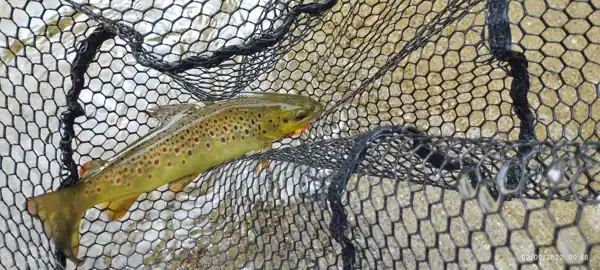
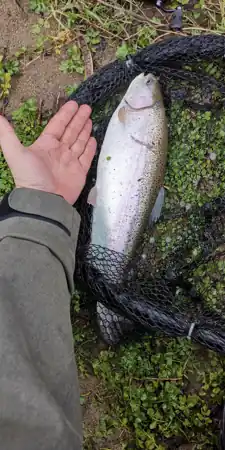

Нивата се публикуват почасово от НИМХ, а сайтът проверява чрез сървърен модул за нови стойности на всеки 5 минути, с резервно копие при проблем. Часът на измерването винаги се показва — включително когато данните са остарели.
Хидрология / НИМХЗареждане…
Водно ниво
— см
Воден дебит
— м³/с
Проверка за последни измервания…Тенденция: —
Сайтът проверява за нов запис на всеки 5 минути.
Водно ниво · последните 24 ч.см
——
Измерванията са информационни. Ниското ниво не означава безопасност — ВЕЦ може да повиши водата внезапно.
Предварителна сезонно-метеорологична оценка, НЕ измерване. Показваме една приблизителна стойност, а възможната грешка е посочена отдолу. Поради влиянието на ВЕЦ точност ±1°C ще твърдим само след проверка с истински измервания от DS18B20.
Ние подкрепяме отговорния риболов и връщането на уловената риба обратно във водата. Действащите забрани и разрешени способи зависят от конкретния участък и сезон.
Балансиран подход
Риболов без следа
Намокряй ръцете си, използвай безконтрени куки, свеждай времето извън водата до минимум. При висока температура избягвай излишен стрес за пъстървата.
🐟
Риболовен наръчник
UL спининг и мухарство
Подбор на примамки според сезона, дебита и бистротата на реката. Преди излет проверявай актуалните риболовни ограничения от ИАРА.
Фотоенциклопедия на речните риби: реални снимки, разпознаване, размери, тегло, местообитание, навици, храна и размножаване. Непотвърдените местни видове са изрично обозначени.
Размерите и теглата са ориентировъчни за видовете като цяло, не са измервания от Въча. По местни риболовни сведения в реката има и риби над 80 см; видът, точната дължина и теглото на конкретните екземпляри предстоят за документиране. Видът на местната мряна, лешанка и съобщените есетрови риби подлежи на потвърждение. Публикуваните максимуми не са размерите на обичайния местен улов.

Балканска пъстърва Снимка от предоставения архив

Американска (дъгова) пъстърва Снимка от предоставения архив
Малкият свят на течението
Лешанка, гамарус и храната на пъстървата
Истински фотографии на водните обитатели и безгръбначни. Ручейниците имат водни ларви; еднодневките и веснянките — водни нимфи.
Дребна речна риба
Лешанка
Phoxinus sp.
Дребна пасажна риба, обитаваща чисти, кислородни течащи води. Важна част от речната хранителна мрежа; конкретният вид и участъци по Въча предстои да се потвърдят.
Дребен странично сплеснат ракообразен организъм под камъни и сред листа. Важна естествена храна за пъстървите; снимката е на G. pulex, а местният вид предстои да се уточни.
Ларвите на много ручейници носят къщички от песъчинки, камъчета или растителни части. Популярна естествена храна за пъстървата и образец за мухарски имитации.
Снимка: Ashley Pond V · CC BY-SA 2.5 · Wikimedia Commons
Водно насекомо
Еднодневка — нимфа
Ephemeroptera
Нимфите живеят под вода и често се крият под камъни. След превръщането си във възрастни насекоми са важна повърхностна храна за пъстървата.
Снимка: Cedarwaxwing25 · CC BY-SA 4.0 · Wikimedia Commons
Водно насекомо
Веснянка — нимфа
Plecoptera
Нимфите на веснянките предпочитат добре аерирани потоци. Често са чувствителни към замърсяване и се използват при наблюдение на качеството на водата.
Снимките са видови примери от други водоеми, а не доказателство за присъствие на конкретния вид във Въча. За местната фауна ще събираме потвърдени наблюдения и фотографии.
Имаш снимки от Въча? Качи ги в галерията. За щука и есетра засега събираме местни сведения; предстои потвърждение на отделните участъци и евентуални зарибявания.
05 / Споделени мигове
Истории от брега.
Не само риболов — разходки, природа, доброволчески акции и малки открития. Галерия за снимки от реката, пъстърви, доброволчески акции и разходки. Качването е с профил; снимките се появяват публично след одобрение.
Въча през обектива ни
Истински снимки на реката и пъстървите от архива, предоставен от Ванков. Натисни снимка, за да я видиш по-голяма.
😄 Рибарски хумор — отвори за усмивка
Следващата снимка е шега от интернет, не е заснета на Въча и не представя местната фауна.
За качване е необходим профил. Вече регистрираните в DNCH могат да влязат със същия имейл и парола.
Снимки след прегледДо 3 снимки наведнъж, JPG/PNG/WebP до 5 MB всяка. Не публикувай чужди снимки без разрешение. Снимките остават за одобрение преди да ги видят останалите.
Снимки от общността
Зареждане на галерията…
06 / Нашата общност
Да направим нещо заедно.
Календар за почиствания, зарибявания, състезания, срещи и природни разходки. Засега тестовите събития се пазят само в твоя браузър.
Предстоящи активности
Календар на доброто
Добави тестово събитие и го виж в календара. След свързване със Supabase активностите ще бъдат споделени и ще минават модерация.
07 / Поглед към реката
Камери по Въча 📷
Намерени са страници с информация за камери, но към 19.10.2026 г. нямаме потвърден работещ видео поток на живо. Отваряй източниците директно; не показваме фалшив LIVE статус.
Видео поток: непотвърден
Кричим · WebcamsBGВъншна страница за камери в града и района на река Въча. Наличието на страница не означава активна камера.Провери при източника ↗
Риболовно сдружение „Олимпик 2002“Сдружението е публикувало информация за наблюдение на реката. Достъпността на сайта и потоците е непотвърдена.Отвори сайта ↗
⚠ Камерите не са надеждна система за предупреждение при рязко покачване на водата. Видеото не се вгражда без потвърдена работоспособност и право за използване.
08 / При нужда
Реката е красива. Безопасността е първа.
Директно набиране на проверени номера. При непосредствена опасност за човешки живот — 112.


.png)